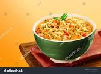

These Chinese-style rice vermicelli noodles make a quick and delicious meal.
These are the ingredients you'll need to make this top-rated homemade lasagna recipe:
Fill a large pot with water and bring to a rolling boil; stir in rice noodles and return to a boil. Cook until al dente, 2 to 3 minutes; try not to overcook as they will become mushy. Drain.
Heat oil in a large skillet over medium heat. Add garlic and sauté until tender. Stir in noodles; season with soy sauce, chili sauce, salt, and pepper. Sprinkle with chopped green onion.
271
7g
48g
2g
Calories
Fat
Carbs
Protein